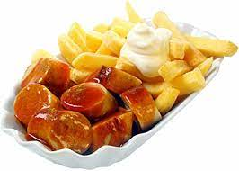

Pommes, Mayo und Currywurst

Rezept für Pommes, Mayo und Currwurst
Currywurst mit Pommes und Mayonnaise ist ein Rezept mit frischen Zutaten aus der Kategorie Fleisch. Probieren Sie dieses und weitere Rezepte von EAT SMARTER!
- 4 dicke Bockwürste
- 1 EL Butterschmalz
- 1 kg Pommes Frites
- Frittieröl für die Fritteuse
- Ketchup
- Currypulver
- Mayonnaise Fertigprodukt oder selbst gemacht
Zubereitungsschritte
- Die Bockwürste mit einem scharfen Messer einschneiden. Den Butterschmalz in einer Pfanne erhitzen und die Würste bei mittlerer Hitze braten. Die Pommes aus dem Gefrierschrank nehmen und im heißen Frittierfett goldgelb frittieren. Mit dem Würsten auf Tellern anrichten. Ketchup über die Würste geben und mit Currypulver bestauben. Mayonnaise zu den Pommes geben. Mit Kräutern garniert sofort servieren.
- Für die Mayonnaise ist es wichtig dass die Zutaten möglichst dieselbe Temperatur haben.
- Das Eigelb mit Senf und etwas Salz glatt rühren. Das Öl Tröpfchenweise (unbedingt, sonst gerinnt die Mayonnaise) unter ständigem Schlagen zufügen, bis die Masse dick und steif wird. Das Restliche Öl abwechselnd mit Zitronensaft unterschlagen. Mit Joghurt, Sahne oder Dosenmilch etwas verdünnen, abschmecken.